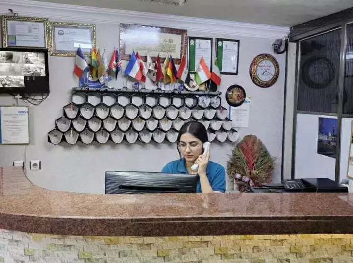

About Us
Sand Expert Ltd is a premier tour operator and travel agency specializing in desert tourism and adventure travel. We design, curate, and organize unique travel experiences that allow global travelers to explore the rich heritage and breathtaking landscapes of Arabian and North African deserts through comprehensive, tailor-made tour programs.
Core Activities & Services
The company provides a fully integrated suite of travel and tourism services, including: Specialized Desert Expeditions: Organizing desert safaris, luxury desert camping (glamping), cultural excursions, and adventure-based outdoor activities. Multi-Destination Expertise: Operating premium, well-structured tour itineraries across the Kingdom of Saudi Arabia, Qatar, Morocco, and Bahrain. End-to-End Logistics Management: Handling high-standard accommodation bookings, secure local transportation, professional tour guiding, and full itinerary execution to ensure a seamless and safe journey for our guests.